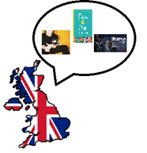
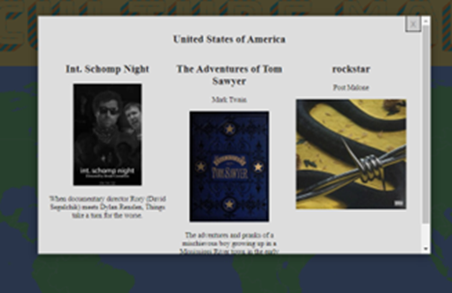

Overview

Cultue Maps https://iit-group12.herokuapp.com/
Topic
The application “Culture Map” offers a unique education experience, allowing the users to explore a multitude of diverse cultural artefacts from around the globe. Culture Maps intends on giving the user their own experience discovering music, films, texts or even languages that they may never have even heard of in a fun and effortless 3 clicks. Of course, this goal is quite unachievable considering the time allowed, meaning we only intend on designing and coding the basic elements of what would eventually become Culture Maps. We also aim to improve our group website, in which we will display a history of the applications development and processes.
We intend on making the application as simple and user friendly as possible, giving anyone the ability to learn about new cultures and ways of living. It may be necessary that only some countries be available for the potential user to navigate to and learn about purely due to time constraints. To successfully achieve our goal, we have divided ourselves into sperate smaller teams to work more efficiently.
Motivation
This project is unique for a number of reasons, including its educational design and purpose, its filling of a gap in a broad market and its user-friendly structure. This application is being designed to allow the user to experience a multitude of diverse cultures and lifestyles through their phone or other device. As it stands today, the content delivered to people via social media platforms is based on previous searches and a database of the user's history, and while this may entertain the user, they will not learn or hear of anything new. This application will act as an alternative medium that can expand peoples outlook and introduce new genres, people, lifestyles, and cultures.
Landscape
At present there are multiple apps, websites and even devices that act in a comparable way to Culture Maps. Most of these competitors are free to use and have a relatively user-friendly UI. To compete in this crowded market, we will need to keep our application adaptable and relevant by keeping a close eye on what cultures young people wish to learn about most. A report by the popular language learning application “Duolingo” revealed that in America: Japanese, Korean and Italian are the most popular languages studied by people aged 13-29. When you compare these countries cultures, they could not seem more different. This indicates a keen sense of worldwide multiculturalism that could be fostered and improved upon by applications such as ours.
Detailed Description
Aims
It is our team's overarching aim to “Develop and produce a basic yet functional prototype application that allows the user to choose a nation from a map and then display that nation's most popular film, novel, and single/album. And create a website and report containing the history and process of development.” The most important thing for our team to remember during the developmental stage is that we aim only to develop a prototype, and that our aim is not to create a finished product but begin the building blocks of what could eventually be considered a finished product. As this is our teams general aim it is of top priority, and it is essential that we have achieved it by the date of submission. To successfully achieve this aim, will need to divide the work evenly between us in a way that allows each member to do what they do best.
Our teams' members have varying degrees of knowledge when it comes to coding. To increase efficiency and generate the best results, we have divided our group into separate smaller and informal teams to complete their own goals. It is the goal of our application developers to “Build and code the prototype application so that it satisfies the needs of our aim.” This goal is by far our most important and should be prioritised above all others as it is necessary to satisfy our groups aim. To complete this goal to the best possible standard our group has endeavoured to achieve it as early as possible and put all our available recourses forward to ensure that it functions correctly when tested and presented. If we are able to achieve this goal in the initial stages of the task's development, we may be able to put more resources towards the website and report, this is however, a best-case scenario and is unlikely to occur.
What can immediately be seen as our second most important goal is “The designing, coding and implementation of our team's website to a standard that meets the given criteria.” Similarly, to the application developer's goal, our web developers goal involves a large amount of coding, meaning that to achieve this goal, we should allocate a reasonable amount of time towards completing it early. However, unlike the application developers' goal of creating a new product, our team has produced a number of websites that can be used and improved on to achieve our aim. This will allow us to use our resources more efficiently, by distributing the workload slightly and increasing the amount of work able to be conducted on the application developers' goal.
Our teams third and least important goal to be achieved by our teams' writers is “To write a report containing the developmental process of the prototype which will later be displayed on the team website, in a way that meets the given criteria.” While this component of our work is extremely important to achieving our aim, it is not considered by the group to be of highest priority as it requires only reading and writing skills and little to no coding to complete. It requires the least amount of our teams' resources so long as it is worked on throughout the entire duration of the task. As this goal requires that we write a detailed history on the development of our application, it may be necessary that some of the work be completed a few days before submission, this may mean that some work be done by all team members.
Plans and Progress
Polina produced the idea for a smartphone application for her Assignment 1, which in the later stages of the project development would be called Culture Maps. She wanted to create an application to give users a cultural and entertaining experience to show what different countries around the world thought was entertainment, at different points in time.
Visually it was going to be a clickable map of the world with a list of years on the side of the map to choose from. The user would click on the desired year they would like to look at and click on the country doing so would have a pop-up window. Inside the window there will be 3 outputs, a musical album, a movie, and a book that was popular for that country and year. Images for each of these outputs will also be shown with a brief description accompanying them. For example, if you were to click on 2019 as the year, select The United Kingdom as the country, the output will be Divinely Uninspired to a Hellish Extent by Lewis Capaldi (most popular album), Irishman (most popular movie) and Pinch of Nom by Catherine Allinson and Kay Featherstone (most popular book). Some years there would be countries that would have the same output as others such as The Avatar movie which was the most popular movie of 2009 for many countries. There would be a link for these outputs for the users to access them easily, Spotify for music albums, Netflix and/or YouTube, and Booktopia for books. The idea was to have an interactive element for users to contribute and provide artwork for the outputs, with the potential for updated content to be provided. This would be done by having a registration section for the users to register and a section to upload the information for the database.
To create such a smartphone app there will need to be a combination of front-end and back-end technologies. The back-end side would have a database to hold information for countries, years, movies, music albums and books. This would be providing 2 inputs for year and country. This will allow the database to retrieve the desired information and by having multiple outputs for each input the database will need to be quite extensive. PostgreSQL was going to store the database for the application and Cloudinary would store the images for the outputs. The front-end would consist of a clickable map with visuals and was going to be built using React, whilst the back-end would be created with Node. For the user experience part of development, the idea was to use tools like Figma and Adobe XD to create the graphical side of the application.
Going into Assignment 2, a group was formed to expand on one of our project ideas and Polina’s project idea was the most applicable as we could hopefully create such an application. The group never ended up having a name and stayed as Group 12 for the upcoming assignments and development of Culture Maps. As the members of Group 12 were unfamiliar with the project and unfamiliar with working as a team on a project there were few suggestions or developments to Culture Maps.
Finding suitable data for the application was troublesome for the timeframe of Assignment 2 and the idea of only potentially doing continents rather than countries was a possibility. The option of only doing a selected number of countries was something we considered. We also had the idea of potentially colour coding these countries by their flag colours to distinguish countries from one another. From the previous idea in Assignment 1, instead of selecting a year first the user would select the country on the map and then a drop-down menu would appear to select the year rather than having the year selection on the side. There was the idea for a speech bubble to then be the pop-up menu with outputs for that country and year for a more graphical experience. This idea could have potentially looked something like this:

We had thought instead of using music albums we could use the most popular single for that year and country as there are more singles released in a year and in lesser developed countries there would be a more likely output.
An idea to create a genre-based input for music, film and writing could create a specialized and personal experience giving developing teams information about what our users are watching, listening to, and reading about the most. Using this information, there is a possibility to create a weekly column giving information on the topmost picked genres. This would give any users willing to do a bit of extra reading an insight into a culture or area of art they have not yet explored. Not much was done in the way of coding Culture Maps and one of the members suggested we could make a paper or digital prototype to see what could fit on a computer and/or phone screen. This could have also been a representation of what could be made if the time constraints became too much.
As previously stated, we had not produced much for Assignment 2 but there were a few ideas which we could go towards within the project in future stages. Trying to find more ideas became challenging as we were preoccupied with other elements of the assignment rather than the project itself.
Moving onto the Assignment 3 timeline, Group 12 worked more collaboratively rather than as individuals. In doing so, the creation of Culture Maps was more achievable albeit not being completed to its fullest potential. Polina and Tereza were tasked with trying to create a concept website as they had the most knowledge and experience regarding programming.
Polina had basic experience with programming and had yet to code any complicated backend for a website. She started this task with creating a simple map in Python, but we quickly realized that we would need a web framework to achieve a minimum working prototype. Polina was not familiar with Flask that we used for this project, so she had to take a crash course to understand the basics of it. She encountered some issues while programming a modal (pop up window) as it was not easy to connect it to each section of the SVG map. Also, creating a CSS part of the project was challenging because of the SVG file positioning on the html. Tereza on the other hand looked at searching and creating a database. In the later part of the Assignment 3 timeline, she became our expert programmer.
The first step in creating our database involved researching the information we were going to use. This was quite difficult because we could not find data which suited our needs, and the other options were paid, which we ruled out. Of the information we could find for free, it was either incomplete or poorly structured meaning we had to spend more time doing research and fixing it to suit our needs. Due to the inability to find the data relating to books, movies, and songs for each year in every country, we decided to use the best song, movie, and book of all time to ease the research process.
To find information about the highest grossing movie in different countries, we first looked to use the datasets available on the IMDb website. However, upon further research, we discovered that those datasets did not have enough information and the information we needed was only accessible with an IMDb Pro subscription. Another reason we chose not to use these datasets was because they were updated daily, and this would mean we would need to spend time downloading every day and this would be an excessively big waste of time, since we needed to concentrate on the writing the code for the website. Instead of using IMDb, we decided to use The Movie Database’s (TMDB) API which was available on their website. After reading the documentation provided on the TMDB website, we decided that this was a suitable service to obtain data and images from as it was quite easy to use and had data for nearly every country and year.
Next, we needed to find information about the top music, which we defined as being the longest charting songs of all time. This was also quite challenging to find because most of the information available on the internet was centred around Western countries, in particular the United States. We looked at the documentation for the Spotify and Last.fm APIs, but they did not provide information which was relevant to our project such as the longest charting songs for a given country. Another source which we looked at was the CSV files available on tsort.info, however, while there was a large amount data for a variety of years, it was only limited to a small subset of countries. We finally decided on using the data collected by S Money on the most valuable songs for each country in the country. This data was reported in the form of a poster, so we needed to type out this information manually. After looking at the poster, we discovered that many countries were missing and decided to not include the missing countries on the web app.
Lastly, we needed to source data relating to the to the bestselling books. Again, the research process was quite difficult due to the lack of information available. We initially thought of using the Goodreads API, but it was limited in terms of functionality and came to realise that it was no longer issuing new API keys. We later decided it would be best to use list of iconic books created by Kimberly Mays for Global English Editing so we could begin coding. Similar to the S Money data, Mays’ list did not contain enough countries, and likewise, those missing countries were simply not included on the website entirely.
While the research was being conducted, we had begun looking for ways to create the web app. On the frontend side, we began to look for JavaScript libraries that would streamline the process of creating an interactive map. Initially, we used Leaflet.js because it was stated to be lightweight meaning it was it easy to use and did not have much functionality, however we found that this was still quite difficult to use and opted to use an SVG map instead. Because neither of the members working on the web app have worked with manipulating SVG files before, we spent a lot of time trying to learn how they were different to raster image files such JPEG and PNG in order to properly implement them into the website.
An issue we ran into with the SVG file, was being able to access the paths and < g > tags using JavaScript to add functionality such as allowing users to click on a specific country. We tried to place the entire SVG file within the HTML file but quickly realised that this was not feasible as it would make the HTML file have over 2000 lines of code. Simply placing the SVG in an < img > tag would mean the file would display as a normal image would, but we would not be able to manipulate it with JavaScript. We took an exceptionally long time to research and learn to use JavaScript in order to add this functionality to the website, and discovered we need to use an < object > tag to be able to do it. However, this added another layer of complexity because the < svg > tag containing the data from the SVG file was implicitly embedded inside the < object > tag and we could not access it directly.
The first SVG map we used had vector paths that were poorly grouped in < g > tags meaning it would be exceedingly difficult to access data related to that group of paths, such as the name of the country which was crucial for the web app to work. We had tried to use Inkscape to manipulate the class name of each path, however we decided to not do this anymore due to the difficulty of the task and how long it would take. Instead, we found another map which had paths that were better grouped. This map was quite detailed and included areas such as disputed lands which we needed to select if they were independent or belonged to a specific country. It also contained the ISO 3166-1 codes for each country and included if it was a territory on another country. For example, Isle of Man had the ISO codes for itself and as a Great Britain territory. This was quite a time-consuming process because we needed to manually edit the file so our code would pick the ISO code for the actual country and not the territory’s ISO code.
Before doing this, we spent an exceedingly long time figuring out how to pass the ISO code for the selected country. We decided to use the JavaScript library jQuery to make an AJAX call from the frontend to the backend. This was not an easy task as we did not really understand how to use AJAX calls worked based on the documentation. We had then written functions that dealt with creating the modal once the user would click on a country. We also added a feature where the colour of a country would change in order to aid usability of the website.
For the backend, we decided to use Flask as the framework for our web app because we found it was simpler to get started with than Django. Originally, we had planned to use NodeJS, but we changed to using Python as the language of choice for the backend because that is what we were most familiar with, and we needed to reduce the time we would spend learning something new. It was quite easy to set up the website, however we found some difficulty in making the page dynamic using Flask at first. We did not realise that in order for the page to be dynamic we needed to create two routes, which is when a URL is linked to a function that contains the web page data. The first route was for the root page contained the map and the second route was for the information to appear on the page once a country was clicked on.
After all the data we needed was found, we started using Python to create a module to obtain the movie poster and movie plot from the TMDB API. This was remarkably simple to do we only needed the ISO 3166-2 code for the selected country and the API key. All we needed to do was send a GET request to TMDB and retrieve the data in JSON format, then parse it and use a function to pass this data back to Flask, which would then pass this to the HTML files and render it on the page. One precaution we had to take was not to add the API directly into the code for safety reasons and instead store it as an environment variable on our laptops.
For the data relating to books and music, we needed to store this data in a PostgreSQL database. We had very minimal experience working with PostgreSQL, so instead of using the SQL shell, we decided to use pgAdmin 4 which was the GUI counterpart to create the database. Before creating the database, we created a schema for each of the tables and normalised it. We came to realise that just storing the author and book title was not enough and we needed a unique identifier such as the ISBN. After taking some time do this, we found Open Library was the only suitable option for an API to use for our project. This was poorly documented and difficult to understand how to use. The definitions were quite nebulous, and the lack of examples made it harder to understand.
When it came to sending GET requests, we realised that older books, such as Beowulf, did not have an ISBN, so we had to change all the ISBNs in the database to Open Library Identifiers (OLIDs). This was a very laborious and time-consuming task to complete because of the way Open Library set up their website. We also decided to check if there was a synopsis and cover image for each book, so we could discard as many countries as possible that had missing information. Something we found quite annoying was that English translations of some books would have a synopsis in a different language. Another major issue we ran into was the structuring of the JSON files themselves. For some books, the synopsis was a first-level key, while we generally expected it to be nested within another key. So, this would generate an error despite there being a synopsis clearly visible on the website. We had expected there to be consistency with the way Open Library stored, especially since all the information was submitted by users. To work around this issue, we simply used if/else statements to stop the program from raising key errors. After this was complete, we created a Python file to query the database to get the OLID and retrieve the synopsis, build the URL for the book cover, and return this to Flask.
A similar process happened with the data relating to the music. We used Music Brainz and Cover Art Archive to obtain the cover art images. We had initially used the ISRC as a unique identifier in the database for each song, but after being unable to get the cover using the ISRC, we decided to use the Music Brainz Identifier (MBID) instead. Something we did not take into consideration beforehand was that not all the songs were singles, meaning that we had to use the cover art for the album it belonged to. Another issue was that some songs had duplicate entries on the Music Brainz website, and we could not understand why the page showed a cover image, yet we were not able to use the Cover Art Archive to derive an image, because the Music Brainz website uses Cover Art Archive to render the image on the page. We had to test each MBID individually to see if an error would be thrown. We created a Python file that dealt with building the URL for each image by taking the ISO code for the country the user clicked and used it to query the database and retrieve the MBID for the given country. Then, it would pass this to main Python file which we used Flask in.
After we had finally collected all the data we needed, we wrote various Python files to pass that information back to Flask. This was quite simple as we needed to do was import the Python files into the main file which Flask was running from and assign variables to the return value of the functions from each of the files. For the songs and books data, we needed to connect the database to the main file by using Flask-SQLAlchemy, the Flask extension of the Python library SQLAlchemy. We took the ISO code from the AJAX request made by the frontend and used it to query the database for the relevant information. Then this was passed to the Python files handling the Open Library and Music Brainz APIs and passed back to the main Flask file. Once we did this, we stored the data in variables and added them to a Python dictionary which was unpacked and passed as a variable in the render_template() function alongside the HTML file for the web app. We could then use the Jinja2 syntax in the HTML file to display the value of each variable there.
After everything to do with obtaining the data and rendering the pages was complete, we began to test how the website worked and found that the website would load quite slowly. Due to our limited experience with Python and web development, we could not identify what was having a negative impact on the performance of our website. There was something slowing down our website, but we decided due to time constraints it was best not to pursue a solution because we strived for making the website purely functional.
Once the coding for the website was finished, we began to look for hosting options. The first choice we came across was pythonanywere.com, which was free however we were only limited to using a MySQL database. We decided against using this service because moving from a PostgreSQL database to a MySQL was too time consuming. Instead, we decided to use Heroku. Heroku had their own version of a cloud database called Heroku Postgres, which was based on PostgreSQL, so it was extremely easy to transfer our local database to Heroku Postgres. We also needed to modify our code because we had stored all sensitive information such as API keys and the database URL on the Heroku website to avoid having to explicitly put in our code for safety reasons.
One thing which we forgot to take into account was the fact that Heroku has an ephemeral file system, meaning any changes written to the file system are deleted once the server restarts, which occurs once a day. This meant that we could not use Heroku to store images. As stated in the Heroku documentation, an alternative was to use Amazon AWS S3 to host the static files, such as images and JavaScript files. Using Amazon AWS S3 further complicated matters related to the SVG map because we did not know that JavaScript cannot access or process images from a different domain. We had attempted to use libraries we found on GitHub to inject the SVG file into the HTML file inline, but that did not work. We also tried to use the boto3 library which was beyond our scope of knowledge. After all these attempts we opted for having Python download the image and using Jinja to add the data from the SVG file into the HTML file directly.
The coding process was very exhausting as we would generally spend at least an entire day working to resolve a specific problem, only to find even more issues that needed to be resolved. Researching and then writing the data into a CSV file was a tedious process due to the mundane nature of the task. However, it was quite rewarding to be able to build something that we found to be difficult for our level of expertise.
As the application for Culture Maps stands now there are only a couple of countries with outputs and no year selection yet. Users are introduced to the world map on first entering the Culture Maps page with an animated title with Culture Maps at the top of the screen.
Hovering over each individual country will produce text next to the cursor to tell the user what country they are hovering over and the countries that are currently selectable will turn orange.
The outputs are not so much by year based but what was or is popular with the genres of music, film, and written works due to not having the available data on hand. The United States of America has outputs of Int. Schomp Night (film), The Adventures of Tom Sawyer by Mark Twain (book), and Rockstar by Post Malone. Underneath the outputs there is an image of the output and the film, and the book has written plots underneath, whilst the music image has a clinkable link to send users to information about the music artist.

The other countries that are available are Canada, Argentina, Turkey, Italy, Switzerland, Ireland, Belgium, and Japan. These have their respective outputs for music, film, and written works for their country.
To get Culture Maps to its fullest potential a lot more work will need to be done. Majority of the work will be to create a larger database to incorporate all countries, with the possibility of not having a couple such as North Korea due to the secretive nature of these countries. There will be a need to create code to have all countries clickable and allow the pop-up window to work. The addition of a working window or toolbar to choose what year the user would like to select will also need to be implemented. Once the user can choose what year they would like to look at the database will need to be updated to include the 3 outputs, music, film, and written works for ever year and every country possible, potentially going back 100 years. An addition of the ability to select genres to personalise the experience would also need a great deal of programming to complete and in addition the database to go towards this as well.
Roles
| Roles/Teams |
Members |
| Application developers |
Polina and Tereza |
| Full stack developer |
Tereza |
| Web developer |
Ryan |
| Writers |
Silas |
While our team has no formal roles, we have divided ourselves into three sperate teams to increase efficiency. These teams are application developers (Polina and Tereza), web developers (Ryan) and writers (Silas). Tereza acted as a lead developer in the creation of the app designing and building both front-end and backend functions of the application. As is made relatively obvious by their names, Application developers will handle the majority of the coding and design elements of the prototype as this is the heaviest and most difficult aspect of the task, the web developers will focus their attention on their attention on improving the team's website and assisting where possible in the group report. The writers will focus their attention on authoring the report and assisting where they can with the needs of other team members.
Our group has decided that these teams are not set in stone and members are able to change the area in which they are working depending on how they are feeling or if they have any innovative ideas. This is why we have so intricately connected our roles, allowing each member to understand and make comments on other team's work. Doing our best to stay within out teams' umbrella of work will, however, make for a more streamlined process. Having a looser definition on what each of our roles are allows us to work better as a team as we each share common skills in variety of areas allowing for more diverse language and modes of thinking when completing different tasks.
Scope and Limits
By the end of this assignment, we hope to have achieved our goal of completing a basic yet functional application as well as a website and report on the history of the project's development. It was made clear in the beginning of the developmental process that the coding/building of the application would take a substantial amount of time and would require a large number of resources to complete. However, we were sure to never stray too far from the confines of our goal ensuring that what we produced was the best that we could possibly achieve in the given time. By the end of the assignments period, we expected to have a functional prototype application, capable of being actioned by a click, and then producing an output based on the user's initial action. This was the minimum that we wished to achieve, and by aiming slightly lower than what we knew we could accomplish, we surpassed that goal by a hefty margin. Not only would this make the application seem more impressive but gave our developers more freedom to design and create what they imagined the application functioned and looked like. The immense and impressive amount of coding required by what we had already achieved showed just how simple it would be to complete the project if it were necessary.
Tools and Technologies
By the end of this assignment, we hope to have achieved our goal of completing a basic yet functional application as well as a website and report on the history of the project's development. It was made clear in the beginning of the developmental process that the coding/building of the application would take a substantial amount of time and would require a large number of resources to complete. However, we were sure to never stray too far from the confines of our goal ensuring that what we produced was the best that we could possibly achieve in the given time. By the end of the assignments period, we expected to have a functional prototype application, capable of being actioned by a click, and then producing an output based on the user's initial action. This was the minimum that we wished to achieve, and by aiming slightly lower than what we knew we could accomplish, we surpassed that goal by a hefty margin. Not only would this make the application seem more impressive but gave our developers more freedom to design and create what they imagined the application functioned and looked like. The immense and impressive amount of coding required by what we had already achieved showed just how simple it would be to complete the project if it were necessary.
GitHub 2.22.10
Python 3.10.4
Python modules:
-Blinker 1.4
-click 8.1.3
-Flask 2.1.2
-Flask-SQLAlchemy 2.5.1
-itsdangerous 2.1.2
-Jinja2 3.1.2
-MarkupSafe 2.1.1
-psycopg2 2.9.3
-requests 2.27.1
-SQLAlchemy 1.4.36
-Werkzeug 2.1.2
JQuery 3.6.0
PostgreSQL 14.2
pgAdmin 4 version 6.7
OpenLibrary Works API
The Movie Database API v4
Amazon S3
Heroku
Heroku CLI 7.57.0
Cover Art Archive
Visual Studio Code 1.67.2
HTML 5
CSS 3
JavaScript ES2015
Polina has basic knowledge of Python and had to have a crash course for Flask. Tereza has about one year of experience with Python but not with using it in web development. She has used Heroku before to host a personal project she has done in Python and used VS Code. Tereza used the requests module in the past to make get requests, but nothing else beyond that. She has very minimal experience with HTML, CSS, and JavaScript. She has some basic experience with SQL but not with the syntax PostgreSQL uses. Other than that, Tereza has not had any experience with anything else we used.
Testing
Our app developers prototype requires constant testing and moulding. As a group we have decided that the application needs to be functional and nothing more. Meaning it is expected that by all members of the group that the prototype will have map that when clicked on by the user will display the clicked countries most popular novel, film, and single/album. Only a certain number of countries will be clickable when the prototype has been completed as we do not intend on creating a finished product. The initial idea was creating an app to show the most interesting artwork produced in each country, however, for the purpose of demonstrating a prototype, we have created a function that would return the highest grossing movie, book, and a song in each country. Creating a full database for each country would take significant amount of time and would be beyond the scope of this task. For the prototype we have included the following countries: Canada, USA, Argentina, Turkey, Italy, Switzerland, Ireland, Belgium, and Japan.
Timeframe
| Week |
Polina |
Ryan |
Silas |
Tereza |
1
Beginning of Assignment 3
timeline |
-Investigating how to create Culture Maps
-Initial research towards creating a clickable map
-Complete Spark Plus feedback for Assignment 2
-Complete Contribution form for Assignment 2 |
-Investigating how to create Culture Maps
-Begin writing of report for Assignment 3
-Chair 2-weekly meetings and discuss where everyone is at with development
-Complete Spark Plus feedback for Assignment 2
-Complete Contribution form for Assignment 2 |
-Investigating how to create Culture Maps
-Begin writing of the report for Assignment 3
-Complete Spark Plus feedback for Assignment 2
-Complete Contribution form for Assignment 2
|
-Investigating how to create Culture Maps
-Initial database research
-Complete Spark Plus feedback for Assignment 2
-Complete Contribution form for Assignment 2
|
| 2 |
-Searching ideas for Culture Maps and finding other concepts that are potentially the same
- Begin coding process of creating for a clickable map |
-Searching ideas for Culture Maps and finding other concepts that are potentially the same
-Begin HTML for report website using Assignment 2 website as template
-Chair 2-weekly meetings and discuss where everyone is at with development |
-Searching ideas for Culture Maps and finding other concepts that are potentially the same
-Continue drafting report as Culture Maps is being created |
-Searching ideas for Culture Maps and finding other concepts that are potentially the same
-Searching for database sources for API’s |
| 3 |
-Searching code for a clickable world map
-Continue coding for clickable map |
-Searching ideas for Culture Maps and databases
-Searching for potential templates for visuals for Culture Maps
-Chair 2-weekly meetings and discuss where everyone is at with development |
-Research for difficult parts of the report
-Continue drafting report as Culture Maps is being created |
-Searching for database sources for API’s
-Initial creation of database
-Help code complex code for clickable map
|
| 4 |
-Continue coding for clickable map
-Conversing with Tereza what parts of the code that are complex and will need Tereza to create
|
-Drafting report sections Silas has asked him to do
-Chair 2-weekly meetings and discuss where everyone is at with development |
-Conversing with Ryan what parts of report he will need to input
-Research for difficult parts of the report
-Continue drafting report as Culture Maps is being created |
-Searching for database sources for API’s
-Continue adding to database
-Continue coding complex parts for clickable map
|
| 5 |
-Continue coding for clickable map
-Conversing with Tereza what parts of the code that are complex and will need Tereza to create
|
-Continue writing sections of the report
-Debugging website template for report and upload to GitHub
-Chair 2-weekly meetings and discuss where everyone is at with development |
-Conversing with Ryan what parts of report he will need to input
-Research for difficult parts of the report
-Continue drafting report as Culture Maps is being created |
-Continue adding to database
-Searching for images for database
-Continue coding complex parts for clickable map |
| 6 |
-Continue coding for clickable map
-Conversing with Tereza what parts of the code that are complex and will need Tereza to create
-Create stylization for clickable maps
|
-Continue writing sections of the report
-Chair 2-weekly meetings and discuss where everyone is at with development |
-Conversing with Ryan what parts of report he will need to input
-Research for difficult parts of the report
-Continue drafting report as Culture Maps concept is being finalized |
-Continue adding to database
-Searching for images for database
-Continue coding complex parts for clickable map |
7
End of Assignment 3 timeline |
- Finalize concept idea for Culture Maps
-Finalize report writing
-Upload text for report website |
-Finalize report writing and editing for submission
-Finalize website design and text upload for submission
-Chair the last meeting of the study period |
-Finalize report writing and editing for submission
-Finalize website design and text upload for submission
|
-Finalize database concepts for Culture Maps
-Finalize complex coding for Culture Maps
-Finalize report writing
-Upload text for report website |
8
Beginning of theoretical timeline |
-Creation of code for year selection for Culture Maps
-Expansion of clickable countries
-Complete Spark Plus feedback for Assignment 3
-Complete Contribution form for Assignment 3 |
-Search for information and expand databases for countries that are clickable
-Complete Spark Plus feedback for Assignment 3
-Complete Contribution form for Assignment 3 |
-Search for information and expand databases for countries that are clickable
-Complete Spark Plus feedback for Assignment 3
-Complete Contribution form for Assignment 3 |
-Creation of code for year selection for Culture Maps
-Expansion of clickable countries
-Complete Spark Plus feedback for Assignment 3
-Complete Contribution form for Assignment 3 |
| 9 |
-Expansion of clickable countries
|
-Search for information and expand databases for countries that are clickable |
-Search for information and expand databases for countries that are clickable |
-Expansion of clickable countries
|
| 10 |
-Finalize clickable countries to have all countries clickable |
-Finalize search for information and expand databases for countries that are clickable |
-Finalize search for information and expand databases for countries that are clickable |
-Finalize clickable countries to have all countries clickable
|
| 11 |
-Coding to include database for years 2022-2012 for all countries in this period |
-Search for information and expand databases for years by beginning from 2022 and working back to 2012 |
-Search for information and expand databases for years by beginning from 2012 and working back to 2002 |
-Coding to include database for years 2012-2002 for all countries in this period
|
| 12 |
-Coding to include database for years 2002-1992 for all countries in this period
|
-Search for information and expand databases for years by beginning from 2002 and working back to 1992 |
-Search for information and expand databases for years by beginning from 1992 and working back to 1982 |
-Coding to include database for years 1992-1982 for all countries in this period
|
| 13 |
-Coding to include database for years 1982-1972 for all countries in this period
|
-Search for information and expand databases for years by beginning from 1982 and working back to 1972 |
-Search for information and expand databases for years by beginning from 1972 and working back to 1962 |
-Coding to include database for years 1972-1962 for all countries in this period
|
| 14 |
-Coding to include database for years 1962-1942 for all countries in this period
-Coding to incorporate a genre selection |
-Search for information and expand databases for years by beginning from 1962 and working back to 1942 (more than previous weeks due to less information for this time regarding music, film, and books) |
-Search for information and expand databases for years by beginning from 1942 and working back to 1922 (more than previous weeks due to less information for this time regarding music, film, and books) |
-Coding to include database for years 1942-1922 for all countries in this period
-Coding to incorporate a genre selection
|
15
End of theoretical timeline |
-Finalization of code for all timeframes and all countries
-Finalize coding for genre section
|
-Finalize database for every country with in a 100-year period |
-Finalize database for every country with in a 100-year period |
-Finalization of code for all timeframes and all countries
-Finalize coding for genre section |
Risks
During our group's meetings, we identified some potential risks that could have arisen during the process of our respective tasks. The most concerning risk was that our team's app developers would be unable to achieve their goal of creating a functional prototype. An event that would have been catastrophic to our progress and greatly impact our ability to complete the task to a respectable standard. To prevent this from occurring, our groups app developers began work on the task the day we discussed it and have focused all their attention on their own goal. Another risk we identified, was our web developer’s ability to improve the website, not because of a lack of skill, but because we have received little to no feedback on both the websites design and structure. This increases our web developers’ chances of inadvertently changing the website for the worse. As there is no straightforward way to mitigate this risk, we will be relying heavily on our web developers' skills and knowledge gained from past experiences during this course. We also recognised that having a single person authoring the report for the group website would be unwise as we would only have a single opinion on each topic, even with the aid of group meetings. To combat this, we decided that our groups web developer would do as much as they could to assist the writer with the report. Another risk we have identified include the third-party APIs we used having inaccurate and incomplete data. This would lengthen the time we would need to spend checking the data for accuracy and doing further research. There is also a potential risk with the data we use being outdated because it is maintained by the community and not a company who works to make sure it is up to date. Due to the limited experience our developers have, a sizeable proportion of the time is spent learning how to use the framework and programming language required for our program to function.
Group Processes and Communications
As communication between group members is essential to complete the task to any respectable standard, we have each endeavoured to be available for both meetings and general questions as often as possible. Our team decided early in the tasks process that we should attempt to meet twice a week via video call to establish which areas need improvement or what we should begin working on next. These meetings have an average run time of 28.49 minutes giving each of us ample time to discuss the day's work and what should be done by the time we next meet.
Each team member has been and is doing their best to maintain an active status on MS Teams to help other members struggling with their workload or with genral questions regarding meetings or times they may not be available. If a team member were to stop replying to messages or joining meetings without an explanation, action would need to be taken immediately to find out when they will be able to next meet. If they were to stop communicating entirely, the group would have to contact a tutor as there is no way for the other members effectively reinvigorate an unmotivated member. An inactive member can not only create more work for other team members, but also cause unnecessary anxiety during an already stressful period.